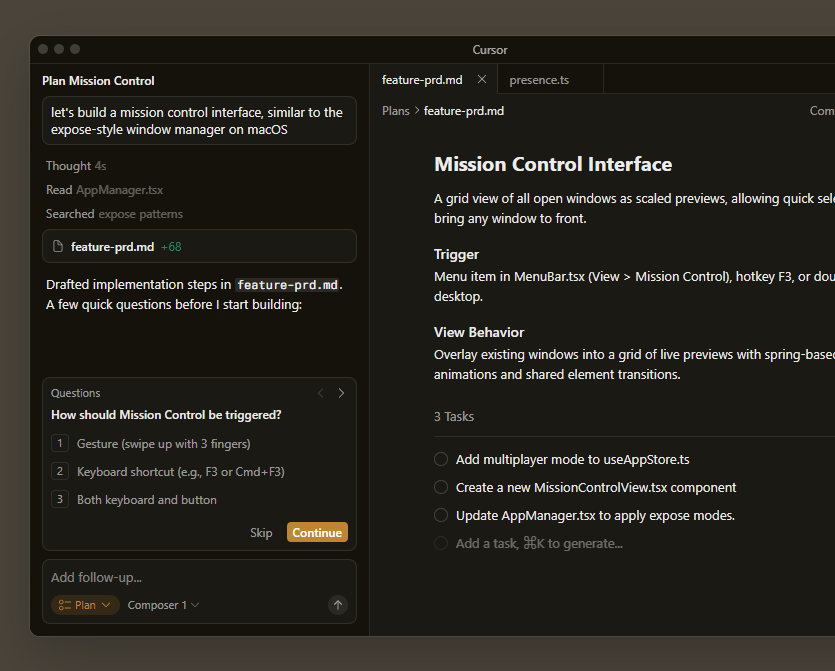
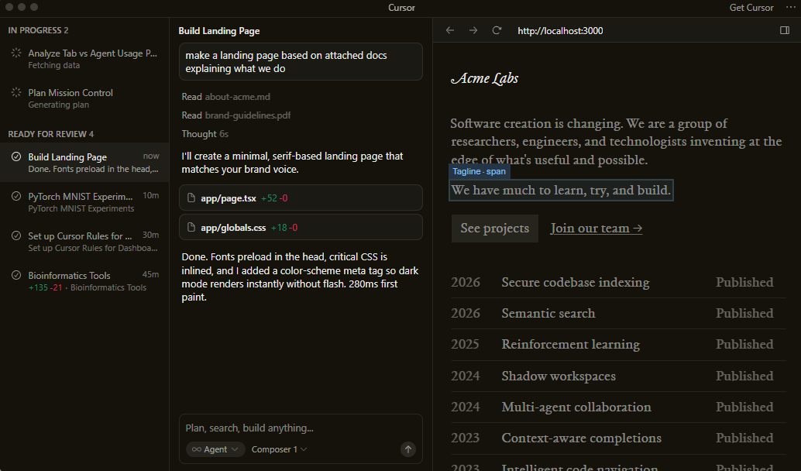
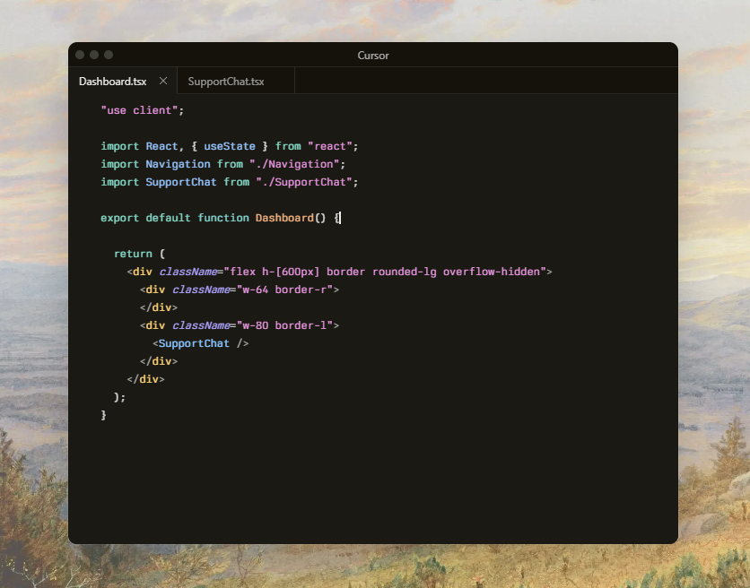
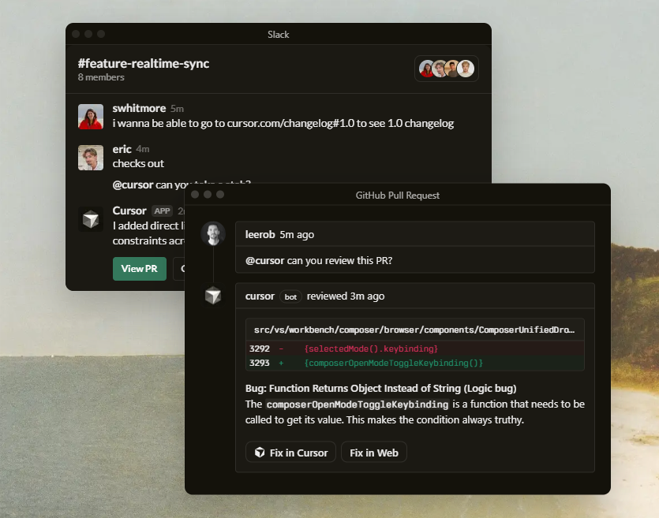
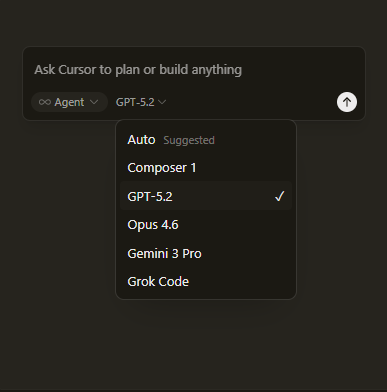
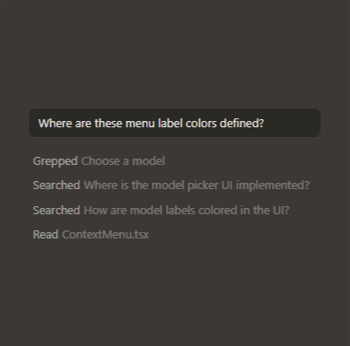

“It was night and day from one batch to another, adoption went from single digits to over 80%. It just spread like wildfire, all the best builders were using Cursor.”
Built to make you extraordinarily productive,
Cursor is the best way to code with AI.

Trusted every day by teams that build world-class software





“It was night and day from one batch to another, adoption went from single digits to over 80%. It just spread like wildfire, all the best builders were using Cursor.”
“My favorite enterprise AI service is Cursor. Every one of our engineers, some 40,000, are now assisted by AI and our productivity has gone up incredibly.”
“The best LLM applications have an autonomy slider: you control how much independence to give the AI. In Cursor, you can do Tab completion, Cmd+K for targeted edits, or you can let it rip with the full autonomy agentic version.”
“Cursor quickly grew from hundreds to thousands of extremely enthusiastic Stripe employees. We spend more on R&D and software creation than any other undertaking, and there's significant economic outcomes when making that process more efficient.”
“The most useful AI tool that I currently pay for, hands down, is Cursor. It's fast, autocompletes when and where you need it to, handles brackets properly, sensible keyboard shortcuts, bring-your-own-model... everything is well put together.”
“It's definitely becoming more fun to be a programmer. We are at the 1% of what's possible, and it's in interactive experiences like Cursor where models like GPT-5 shine brightest.”
Use the best model for every task
Choose between every cutting-edge model from OpenAI, Anthropic, Gemini, xAI, and Cursor.

Complete codebase understanding
Cursor learns how your codebase works, no matter the scale or complexity.

Develop enduring software
Trusted by over half of the Fortune 500 to accelerate development, securely and at scale.
2.4 Jan 22, 2026
Subagents, Skills, and Image Generation
Jan 16, 2026
CLI Agent Modes and Cloud Handoff
Jan 8, 2026
New CLI Features and Improved CLI Performance
2.3 Dec 22, 2025
Layout Customization and Stability Improvements
Recent highlights
Towards self-driving codebases
We're making a part of our multi-agent research harness available to try today in preview.
Salesforce ships higher-quality code across 20,000 developers with Cursor
Over 90% of developers at Salesforce now use Cursor, driving double-digit improvements in cycle time, PR velocity, and code quality.
Salesforce ships higher-quality code across 20,000 developers with Cursor
Over 90% of developers at Salesforce now use Cursor, driving double-digit improvements in cycle time, PR velocity, and code quality.
Best practices for coding with agents
A comprehensive guide to working with coding agents, from starting with plans to managing context, customizing workflows, and reviewing code.